三系列碳纤维专业三脚架参数对比 · 标准款 / 轻便款 / 加高款
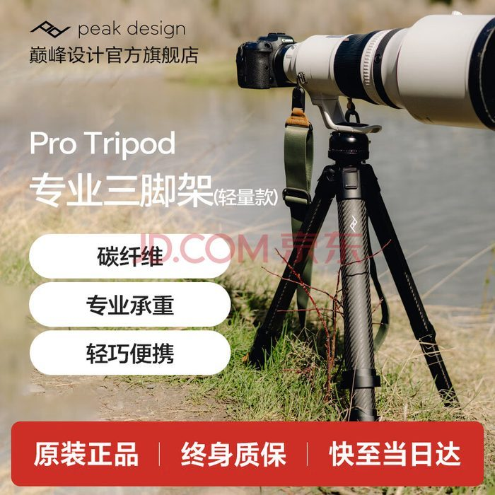
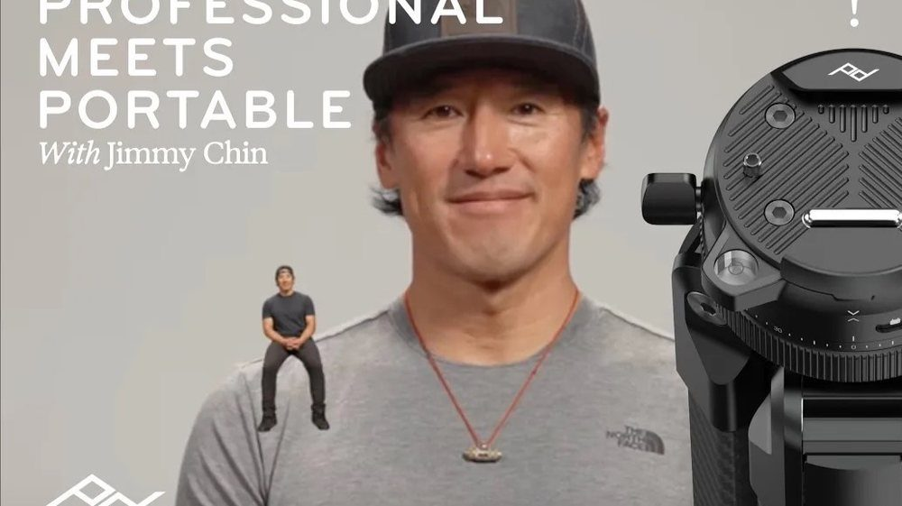
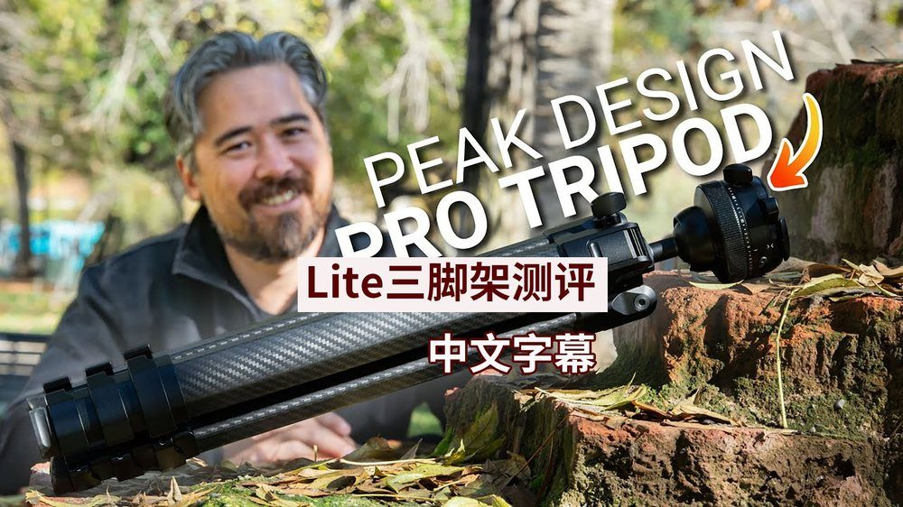
| 参数 | Pro Lite 轻便款 | Pro 标准款 | Pro Tall 加高款 |
|---|---|---|---|
| 型号代码 | PT-L-BK-1 | PT-S-BK-1 | PT-T-BK-1 |
| 京东 SKU | 10200854892910 | 10207560867517 | 10200854892909 |
| 整体重量（含云台） | 1.7 kg | 1.9 kg | 2.0 kg |
| 收纳长度 | 48.8 cm | 50.1 cm | 58.1 cm |
| 收纳直径 | 8.5 cm | 9.3 cm | 9.3 cm |
| 最高工作高度（升中轴） | 162.5 cm | 168.4 cm | 197.4 cm |
| 最高工作高度（不升中轴） | 133.2 cm | 138.0 cm | 162.0 cm |
| 最低工作高度 | 29.3 cm（桌面模式）/ 15.8 cm（低角度） | 30.4 cm（桌面模式）/ 15.9 cm（低角度） | 35.4 cm（桌面模式）/ 17.3 cm（低角度） |
| 承重能力 | 15.9 kg | 18.2 kg | 18.2 kg |
| 脚管节数 | 4 节 | 4 节 | 4 节 |
| 脚垫类型 | 可拆卸防滑聚氨酯脚垫 | 可拆卸防滑聚氨酯脚垫 | 可拆卸防滑聚氨酯脚垫 |
| 云台类型 | Pro Ball Head（流体全景+Arca快装） | Pro Ball Head（流体全景+Arca快装） | Pro Ball Head（流体全景+Arca快装） |
| 主体材质 | 3K 碳纤维脚管与中轴，CNC 6061-T6 回收铝合金构件 | 3K 碳纤维脚管与中轴，CNC 6061-T6 回收铝合金构件 | 3K 碳纤维脚管与中轴，CNC 6061-T6 回收铝合金构件 |
| 附赠配件 | 三脚架袋、标准快装板、内六角工具（2.5/4 mm）、负重钩 | 三脚架袋、标准快装板、内六角工具（2.5/4 mm）、负重钩 | 三脚架袋、标准快装板、内六角工具（2.5/4 mm）、负重钩 |
| 京东参考价 | 约 ¥5,800 – ¥6,500 · MSRP $799 | 约 ¥6,500 – ¥7,300 · MSRP $899 | 约 ¥7,200 – ¥8,000 · MSRP $999 |
| 推荐人群 | 旅行/徒步/风光摄影师，追求极致轻便 | 大多数专业摄影师，兼顾高度与承重 | 高个子用户、视频创作者、需要俯拍/越过障碍物 |
| 型号代码 | PT-L-BK-1 |
| 京东 SKU | 10200854892910 |
| 整体重量（含云台） | 1.7 kg |
| 收纳长度 | 48.8 cm |
| 收纳直径 | 8.5 cm |
| 最高工作高度（升中轴） | 162.5 cm |
| 最高工作高度（不升中轴） | 133.2 cm |
| 最低工作高度 | 29.3 cm（桌面模式）/ 15.8 cm（低角度） |
| 承重能力 | 15.9 kg |
| 脚管节数 | 4 节 |
| 脚垫类型 | 可拆卸防滑聚氨酯脚垫 |
| 云台类型 | Pro Ball Head（流体全景+Arca快装） |
| 主体材质 | 3K 碳纤维脚管与中轴，CNC 6061-T6 回收铝合金构件 |
| 附赠配件 | 三脚架袋、标准快装板、内六角工具（2.5/4 mm）、负重钩 |
| 京东参考价 | 约 ¥5,800 – ¥6,500 · MSRP $799 |
| 型号代码 | PT-S-BK-1 |
| 京东 SKU | 10207560867517 |
| 整体重量（含云台） | 1.9 kg |
| 收纳长度 | 50.1 cm |
| 收纳直径 | 9.3 cm |
| 最高工作高度（升中轴） | 168.4 cm |
| 最高工作高度（不升中轴） | 138.0 cm |
| 最低工作高度 | 30.4 cm（桌面模式）/ 15.9 cm（低角度） |
| 承重能力 | 18.2 kg |
| 脚管节数 | 4 节 |
| 脚垫类型 | 可拆卸防滑聚氨酯脚垫 |
| 云台类型 | Pro Ball Head（流体全景+Arca快装） |
| 主体材质 | 3K 碳纤维脚管与中轴，CNC 6061-T6 回收铝合金构件 |
| 附赠配件 | 三脚架袋、标准快装板、内六角工具（2.5/4 mm）、负重钩 |
| 京东参考价 | 约 ¥6,500 – ¥7,300 · MSRP $899 |
| 型号代码 | PT-T-BK-1 |
| 京东 SKU | 10200854892909 |
| 整体重量（含云台） | 2.0 kg |
| 收纳长度 | 58.1 cm |
| 收纳直径 | 9.3 cm |
| 最高工作高度（升中轴） | 197.4 cm |
| 最高工作高度（不升中轴） | 162.0 cm |
| 最低工作高度 | 35.4 cm（桌面模式）/ 17.3 cm（低角度） |
| 承重能力 | 18.2 kg |
| 脚管节数 | 4 节 |
| 脚垫类型 | 可拆卸防滑聚氨酯脚垫 |
| 云台类型 | Pro Ball Head（流体全景+Arca快装） |
| 主体材质 | 3K 碳纤维脚管与中轴，CNC 6061-T6 回收铝合金构件 |
| 附赠配件 | 三脚架袋、标准快装板、内六角工具（2.5/4 mm）、负重钩 |
| 京东参考价 | 约 ¥7,200 – ¥8,000 · MSRP $999 |
Pro 系列基于广受好评的 Travel Tripod 原始架构放大升级（与摄影师 Jimmy Chin 合作研发），在稳定性与展开高度上全面进化，并新增视频拍摄支持。官方称其刚性约为旅行款的两倍。
| 参数 | Travel Tripod 碳纤维版 （上代·旅行定位） | Pro Lite 轻便款 | Pro 标准款 | Pro Tall 加高款 |
|---|---|---|---|---|
| 整体重量（含云台） | 1.27 kg | 1.7 kg +330 g | 1.9 kg +630 g | 2.0 kg +730 g |
| 承重能力 | 9.1 kg | 15.9 kg +75% | 18.2 kg ×2 翻倍 | 18.2 kg ×2 翻倍 |
| 最高高度（升中轴） | 152.4 cm | 162.5 cm +10.1 cm | 168.4 cm +16 cm | 197.4 cm +45 cm |
| 最高高度（不升中轴） | 130.2 cm | 133.2 cm +3 cm | 138.0 cm +7.8 cm | 162.0 cm +31.8 cm |
| 收纳长度 | 39.1 cm | 48.8 cm +9.7 cm | 50.1 cm +11 cm | 58.1 cm +19 cm |
| 收纳直径 | 7.9 cm | 8.5 cm | 9.3 cm | 9.3 cm |
| 脚管节数 | 5 节 | 4 节 更粗更稳 | 4 节 更粗更稳 | 4 节 更粗更稳 |
| 最低高度（低拍模式） | 14 cm | 15.8 cm | 15.9 cm | 17.3 cm |
| 中轴结构 | 圆柱中轴 | 法兰结构中轴 刚性↑ | 法兰结构中轴 刚性↑ | 法兰结构中轴 刚性↑ |
| 连接组件加工 | 部分 CNC | 全 CNC 精密加工 | 全 CNC 精密加工 | 全 CNC 精密加工 |
| 云台 | 旅行款球台（手机夹藏于中轴） | Pro Ball Head 全新云台 | Pro Ball Head 全新云台 | Pro Ball Head 全新云台 |
| 流体水平旋转（视频） | 无 | 集成于云台 新增 | 集成于云台 新增 | 集成于云台 新增 |
| 快装系统 | Arca 兼容 | 全新快锁式 Arca 升级 | 全新快锁式 Arca 升级 | 全新快锁式 Arca 升级 |
| 视频云台扩展 | 不支持 | Tilt Mod（另售） 新增 | Tilt Mod（另售） 新增 | Tilt Mod（另售） 新增 |
| 内置工具 | 手机夹 | 折叠手机夹 + 六角工具 升级 | 折叠手机夹 + 六角工具 升级 | 折叠手机夹 + 六角工具 升级 |
| 产品定位 | 旅行便携 | 专业轻便 | 专业主力 | 专业高大型 |
摘自《2025 Tripod Pro 产品介绍》（Peak Design 官方中文资料）：
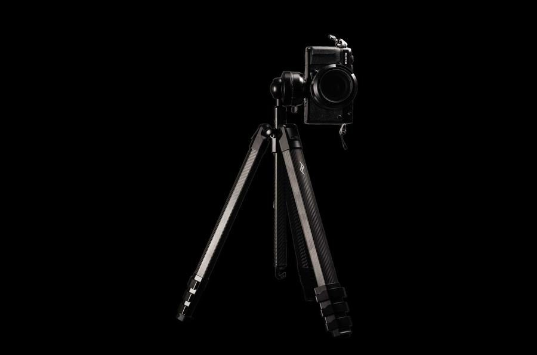
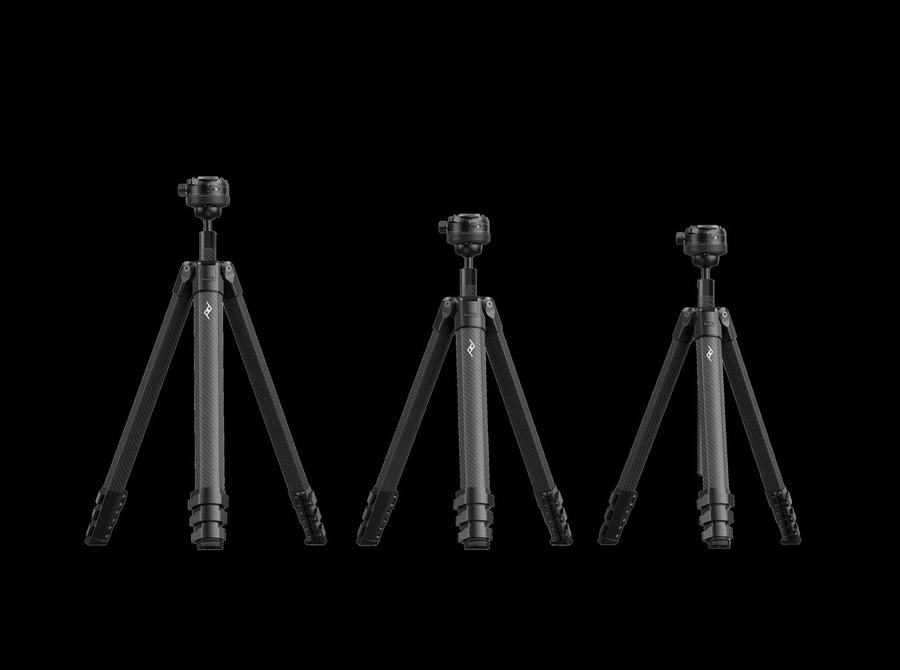
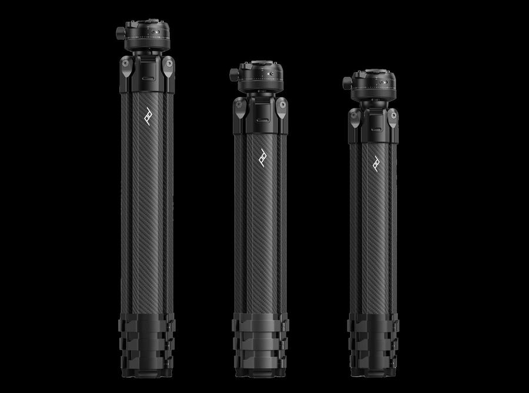
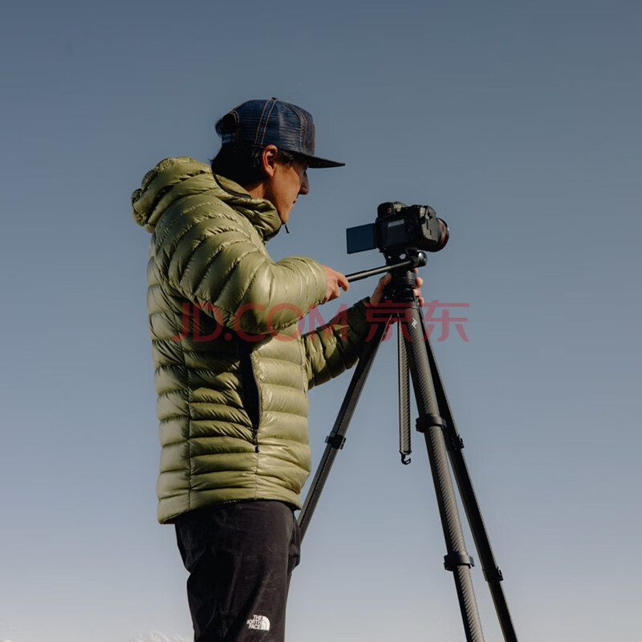
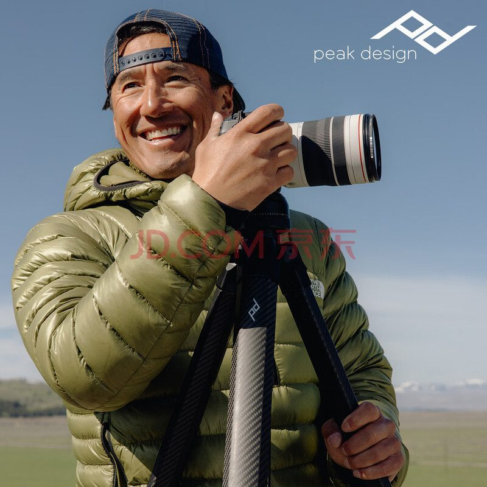
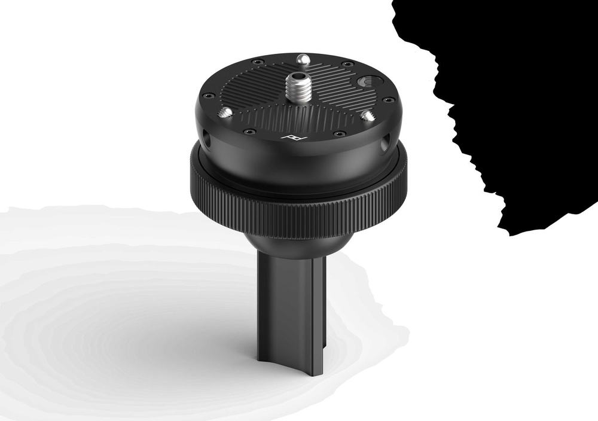
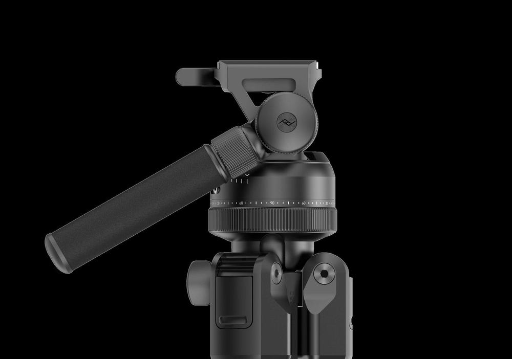
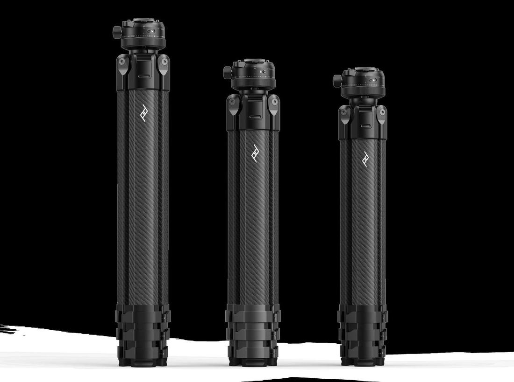